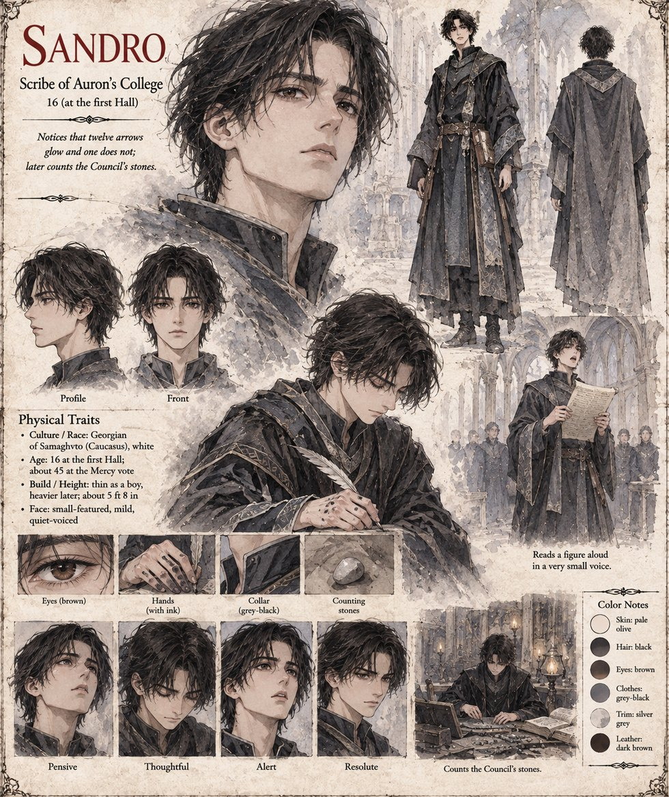

Sandro
Scribe of Auron’s college · numberer of the arrows · counter of the Council’s stones · 16 at the first Hall on his sheet
A thin boy named Sandro, a scribe of Auron’s college, is given the task of numbering the arrows when the Council first sits in the Hall of Oaths. On the second day he observes that twelve of them glow and one does not, and that the one that does not is the one the girl shot. He says so in a voice so small that the Synod has to fall silent to hear it. It was the most important sentence spoken in the Hall that autumn, and Sandro was not thanked for it. An answered arrow goes dark; the thing can be asked once. A bow with twelve arrows becomes, in the language of the clerks, a facility of twelve requests, and in the language of the Hierarchs, who have begun at once to think like owners, a treasure of twelve gifts, and the manuscript calls the change in vocabulary the first thing that was lost.
Twenty-nine years later he is still the Council’s scribe. At the Mercy Vote the white and black stones are dropped into a bronze bowl, as they have been since the first year, and the bowl is tipped out upon the basalt and counted twice by Sandro, who was no longer thin, who reads the figure aloud in the same small voice. Six, and six. It is the figure that sends every head in the horseshoe to the thirteenth chair. The manuscript does not name him again.
The manuscript gives his boyhood, his thinness, his college, the numbering, the observation and the stone count, and no face, age or colouring. The sheet’s age of 16 at the first Hall and about 45 at the Mercy Vote, small-featured, mild face, build of about 5 ft 8 in, heavier in later life, black hair, brown eyes, pale olive skin, ink on his hands and a quill, and a grey-black robe with silver-grey trim, a dark brown leather belt and satchel are its own, as are its panels Pensive, Thoughtful, Alert and Resolute. Its scenes, Reads a figure aloud in a very small voice and Counts the Council’s stones, follow the manuscript.
“the small voice that had been the most important in Samaghvto for three decades and had never been told so”
Appears In

Related Subjects


Related Records

On the ninth of Carren in the twenty-ninth year, Mirdat stands before the Council of the Quiver in the open court with his cap in his hands, because a petitioner of Orvaneti does not sit, and asks for rain. Sandro counts the stones twice and reads the figure aloud, six and six; the bow on its slab appears to grow warmer, and every head in the horseshoe turns to the thirteenth chair, where Ketevan, with her ledger on her knee, says “Yes” in a voice that does not carry beyond the second row.